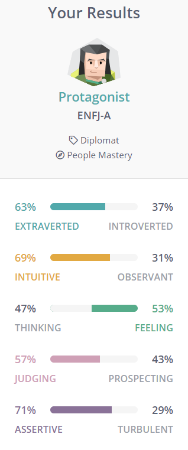
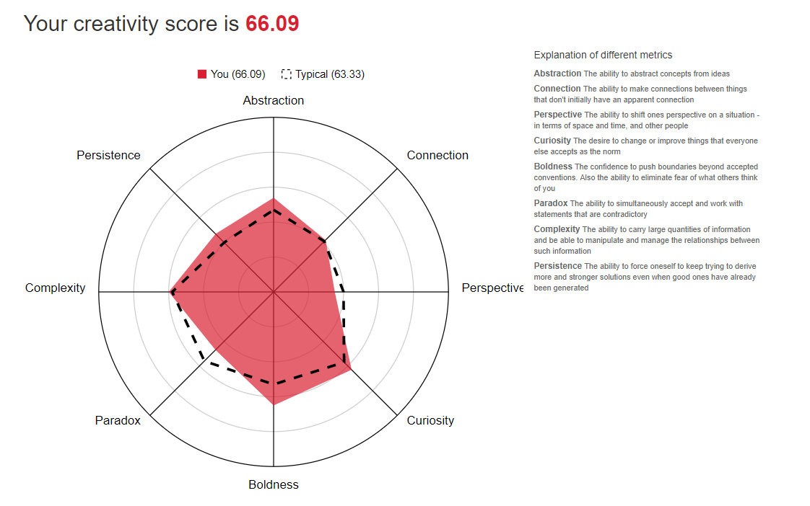

Home Personal Information Interest in IT Ideal Job Personal Profile My Project
Personal Profile
My personality type is ENFJ: Extraversion (E), Intuition (N), Feeling (F), Judgment (J)

• I am a visual learner
• The results of my creativity test

What do the results of these tests mean for you?
• That I am a natural-born leader who learns best with visuals and has many strengths in my creativity
which include the ability to eliminate fear of what others think of me and the confidence to push boundaries beyond accepted conventions.
How do you think these results may influence your behaviour in a team?
• “People with the Protagonist personality type are intelligent, warm, idealistic, charismatic, creative, social...
With this wind at their backs, Protagonists are able to thrive in many diverse roles, at any level of seniority.
Moreover, they are simply likeable people, and this quality propels them to success wherever they have a chance to work with others.”
How should you take this into account when forming a team?
• Forming a team should be done by starting with learning/knowing the other members' strengths/weaknesses and trying to find
people that excel where others don’t, to create an entity that is impenetrable.
back to top